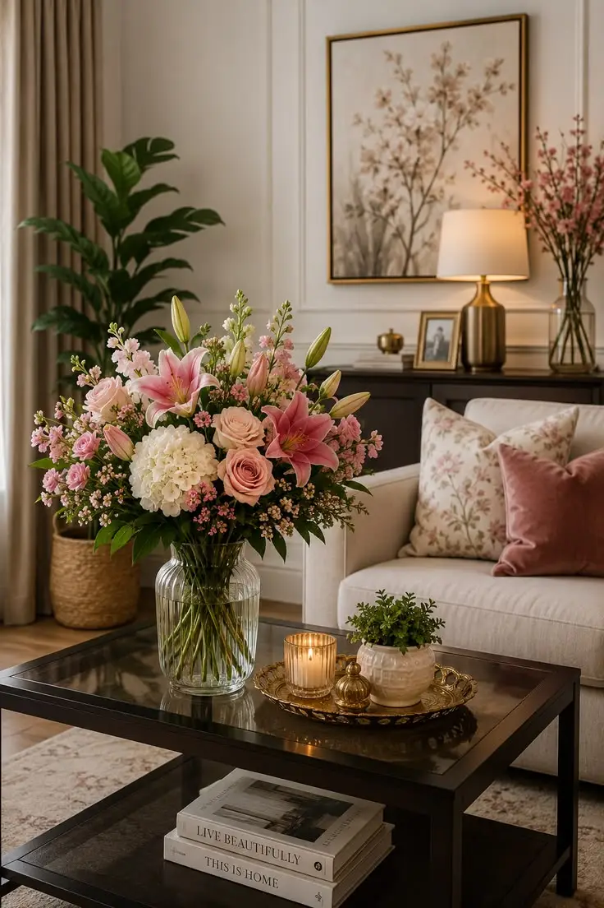

Tendencias en Decoración Floral para el Hogar
María González
Publicado el: 15 de agosto de 2026
Cómo incorporar arreglos florales en el salón o comedor, uso de paletas de colores de temporada y floreros recomendados.
Las flores no solo embellecen nuestro entorno, sino que también pueden transformar la energía de un espacio. En este artículo, exploraremos las últimas tendencias en decoración floral para el hogar, desde la elección de flores hasta la disposición de los arreglos. Descubre cómo los colores, las texturas y los estilos de floreros pueden complementar tu decoración existente y crear un ambiente acogedor y elegante. Además, te ofreceremos consejos prácticos para mantener tus flores frescas por más tiempo y cómo combinarlas con otros elementos decorativos para lograr un efecto armonioso.
Arreglos Minimalistas
Menos es más. Los arreglos florales elegantes y minimalistas se han convertido en una tendencia fuerte este año. Emplear flores de colores suaves y pocas variedades, estos arreglos aportan una elegancia sutil a cualquier espacio. En Rosalinda, te sugerimos combinaciones de lirios blancos y eucalipto para un toque de frescura y serenidad.
Arreglos en tonos pastel
Los tonos pastel continúan dominando las tendencias de decoración. Los arreglos florales en colores suaves son perfectos para dar un toque dulce y tranquilo ideal como arreglo floral para mesa. Estos colores incluyen rosa, lavanda y azul claro. En Isaflor, nuestros diseñadores crean confecciones delicadas con rosas blancas, hortensias y mini rosas pastel. El arreglo floral Noelia Lila es un buen ejemplo. Incluye rosas, minirrosas, miniclaveles y limonium en un florero pequeño. Es perfecto para decorar cualquier rincón de tu casa.
